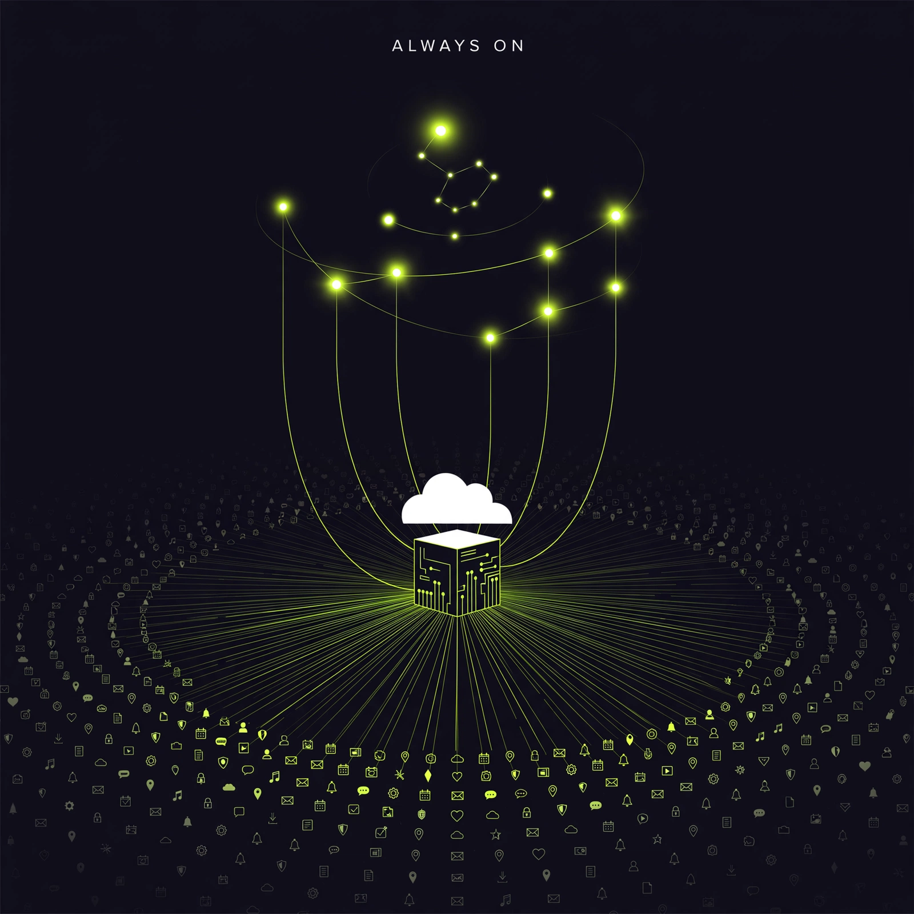

- [38] OpenAI unveiled always-on Dots agents with own cloud computer and 4,000+ app plugins for Pro and Business Premium users.
- [40] Anthropic announced $100M Claude Frontier Academy for 10,000 enterprise engineers by end-2027 plus Cowork web/mobile beta on Max plan.
- [35] <-> [36] Google released Gemini 4 Argon with 1M-token output for agentic/cyber tasks, then restricted it to vetted experts and US government.
- [31] Meta hired MongoDB CEO Chirantan CJ Desai as Chief Enterprise Platform Officer to bundle Muse, Business Agent, Muse API and Muse Code.
- [42] <-> [43] Moonshot shipped open-weight Kimi-K2.7-Code (1T-param MoE) as OpenAI alleged distillation via 4,000+ linked accounts.
- [33] <-> [34] Meta's Muse added partner checkout on Walmart/Gap/Sephora for a fee amid report of hourly profiling of users' contacts.
- [30] OpenAI gave Codex persistent reusable cloud environments plus voice CLI refresh and desktop code-review.
- [38] Dots: driven by business-model shift + competitive pressure vs Meta — from chat to persistent workers that justify Pro/Business Premium stickiness via plugins and cloud computers.
- [40] Academy + Cowork: driven by talent bottleneck — enterprise agents fail on deployment, so Anthropic funds 10k engineers while pushing mobile tracking for long-running tasks.
- [35] + [36] Argon: driven by capability unlock meeting regulation — 1M output tokens enables long-horizon cyber/coding, forcing gov-only gating over dual-use risk.
- [35] <-> [36] — continue — same-actor Argon release then access limit over dual-use cyber risk.
- [26] <-> [27] — continue — same-actor Claude Code 2.1.287 Mods/side-agent followed by 2.1.289 stability pass with agent.spawn.
- [28] <-> [30] — continue — same-actor Codex DevDay push pairing reusable cloud envs with Security Cloud scans.
- [42] <-> [43] — contradict — same-actor open-weight Kimi push coincides with distillation allegation against Moonshot-linked accounts.
- [38] <-> [40] — rhyme — OpenAI Dots and Anthropic Cowork both push background/long-running agents, different labs, no causation.
- [31] <-> [40] — rhyme — Meta enterprise platform hire rhymes with Anthropic enterprise academy, parallel enterprise land-grab.
- [bullish] Persistent, cross-device agent environments become default builder target — Codex envs, Dots, Cowork all converge there.
- [bearish] Frontier cyber-agentic models go gov-gated — Argon restriction signals builders won't get top offensive capabilities.
- [bullish] Open-weight moat keeps shrinking — GLM-5.2 local [49], K2.7-Code [42], MiniMax Code MIT [46] lower self-host cost.
- Thin: [45] M3.1-Flash-Preview has no card, benchmarks, or API listing — needs second source.
- Watch: [41] IPO liability warning on agent harm and [39] 100+ org alerts on bypasses — both single-sourced, need legal/incident confirmation.
- Watch: [37] Gemini Call for Me limited to Pixel 11/US, [48] ILMUcode sovereign claim — need independent verification.